(On letter, image obtained from a Siegel auction)
Return To Catalogue - United States locals overview - Faunce's to Hall & Mill's - Jenkins to McMillan - United States
Note: on my website many of the
pictures can not be seen! They are of course present in the cd's;
contact me if you want to purchase the catalogue.
Inscription "For the POST OFFICE CITY DESPATCH PAID T.A. HAMPTON", black, issued 1847:
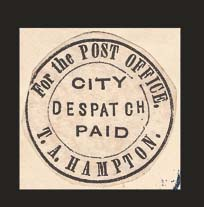
(On letter, image obtained from a Siegel auction)
This company also used the following cancels:
(images obtained from a Siegel auction)
Note the resemblance of the stamps and postal stationery of this company to those of G.S.Harris.
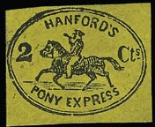
The genuine stamp should be black on yellow (issued in 1845). I've been told it also exists in black on orange. The stamps are left uncancelled or were cancelled with a small "PAID" cancel. Genuine stamps have a '-' instead of a '.' below the 's' of 'Cts'. The January 2008 issue of 'The Penny Post' (Vol 16, no 1) describes the distinguishing characteristics of genuine stamps. It mentions that ten different forgery types exits.
There are also some handstamped covers known (in black or red).
Genuine Hanford's envelope handstamped in red
Hussey made forgeries of this stamp (he even made a tete-beche). Examples of forgeries:
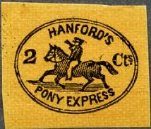
The hat is very much different in this forgery (long extending backside). If I'm well informed, there are even four different types of this forgery.
Reduced size
The front leg of the horse is too far backwards in this forgery.

The '2' is different and the tail of the horse straighter than in
the genuine stamps. The colors are all wrong.
The horn is held too high and slightly too horizontal in this forgery. The shading of the horse is too black. The outer frame line of the ellipse is much thicker than the inner frameline.
A forgery very similar to the above ones, but with slightly more
shading on the horse.
This forgery has inscription 'Ct.' instead of 'Cts.'. I have also seen bogus values 1 c black on green, 3 c silver on black, 4 c black on yellow, 5 c silver on blue and 6 c black on blue in this design.
Totally different design, inscription 'HANFORD'S City Express
Post TWO CENTS', maybe an essay?
Inscription "For the POST OFFICE CITY DESPATCH PAID G.S.Harris", black, issued 1847, sorry no picture available, the stamps looks identical to the one issued by T.A. Hampton.
Another stamp exist from this company with "PAID" in the center, there is only one copy of this stamps known:
(Image obtained from a Siegel auction)
Postal stationery in a similar design (with 2 Cts in the center):
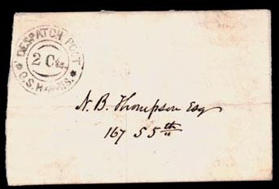
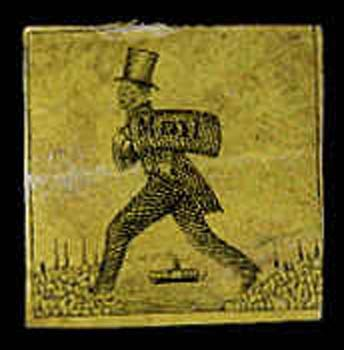
(Genuine, left image obtained from a Siegel auction)
Genuine, with 'South' manual cancel
(Genuine, reduced size, image obtained from a Siegel auction)
black on yellow black on pink
This mail service was started by Parsons and Fuller of Hartford. These stamps were issued in 1844, they most often have the manual inscription 'South'. However, other manual inscriptions such as 'Southern', 'East', 'West' (see http://www.pennypost.org/German%20auction%20photo%20plates.pdf for an example) and 'Hartford' exist. These cancellations were done before the stamps were attached to the letters. There are 12 types of these stamps. The black on yellow stamps were sold twenty for a dollar, the black on pink stamps ten for a dollar. No more than 100 of the black on yellow stamps were printed and an even less number of the black on pink stamps. Black on buff stamps are merely a color changing of the black on yellow stamps. The mail sack has horizontal and vertical shading lines in the genuine stamps.
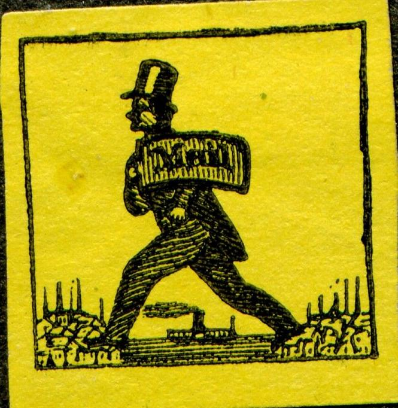
I presume this is the first forgery
This forgery only has vertical shading lines on the mail sack. If I'm well informed, this forgery was made by Scott.
Taylor forgery, reduced size
This forgery was made by Taylor. The mail sack does not have any inscription, but shaded oblique lines instead.
Other forgery, horizontal shading on the hat and vertical shading
on the bag.
Some other forgeries, often in the strangest colors, exist.
Stamps with inscription "HARTFORD DAILY MAIL" are bogus issues made by the forger S. Allan Taylor:
(Hartford Daily Mail, 1 c violet, I've also seen the value 1 c
green and 1 c blue)
Inscription "HILL'S POST BOSTON 1 CENT" in a circle (issued 1849), black on lilac:
(Genuine, image obtained from a Siegel auction)
The genuine stamps should be red on bluish paper. The value is 1 c. This stamp was issued in 1855, but probably never used. This post operated only for a few months.
Reprints from the original stone were made by Hussey (probably around 1866). The reprints are on white paper which is much thicker. Hussey printed stamps in red on white paper and a bogus color grey on white paper.
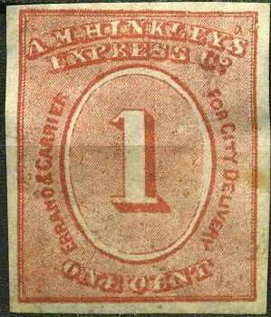
Reprint, reduced size
I've seen a sheet of reprints consisting of 16 stamps (4 x 4); the original sheet might have even been bigger.
First forgery; here in bogus blue color, reduced size
This forgery has one very thick frameline (instead of two like the genuine stamps and reprints). In the genuine stamps, some of the background lines enter the '1' at the left side. In this forgery, this is not the case. The apostrophe behind "HINKLEY" is missing in this forgery. These forgeries seem to exist in red and blue color.
Second forgery in green on yellow and in brown
This forgery is not very deceptive, the background lines behind the '1' are too coarse. The '&' between 'Errand' and 'Carrier' is missing in this forgery. It exists in various bogus colors: blue, brown, lilac on yellow, green on yellow, brown on blue, red on blue, and red on lilac.
(Image obtained from a Siegel auction)
Issued in 1852 for New York in the colour black on yellow. This stamp is extremely rare, only four stamps exist.
Rectangular design (1849), black on pink:
(Images obtained from a Siegel auction, on the left together with
a USA stamp, reduced size)
Circular design (1849), issued in black on yellow and black on pink:
(Image obtained from a Siegel auction)
There seems to exist a stamp with inscription "J.A.HOWELL'S CITY DESPATCH" in a rectangle, colour black. It must have been issued somewhere in the 1840's in Philadelphia. I have no picture of this stamp, it is extremely rare.
A black on red stamp with inscription "HOYT'S Letter Express To ROCHESTER" was issued in 1844, it is very rare (only 9 stamps known).
Probably a forgery:
I have seen a label (black on bluish) with inscription "HOYT'S EXPRESS TO ROCHESTER PAID", surrounded by an ornamental border, not resembling at all the above image. This is probably a bogus issue:
Genuine stamp
Probably genuine
(Reduced size, genuine)
This stamp was issued in 1862 in the colour brown (the value is 25 c). The cancel on the above stamp is "LANGTON'S PIONEER EXPRESS UNIONVILLE" in an ellipse. Other cancels, such as 'PAID' in an ellipse seem to exist.
At least three types of forgeries exist (also in bogus colors such as grey, black, red on yellow, red on blue, red, green on yellow, red on lilac and blue).
First forgery, reduced sizes; with a bogus 25 c violet stamp. The
"S" of "CENTS" is very squeezed. The
"T" of "LANGTON" appears larger than the
other letters.
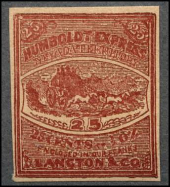
Second forgery. It has the "L" of "HUMBOLDT"
slanting backwards.
Third forgery of the Humboldt Express Nevada Territory Lancton
& Co. The mountains are indicated with diagonal lines. The
"S" of 'CENTS' has a large top part and the
"L" of "HUMBOLDT" is slanting backwards. I
know that Taylor made forgeries of this stamp, I suspect the
above stamp to be such a Taylor forgery.
A bogus issue with a ship and inscription "LANGTON & CO MONEY PACKAGE OVERALL OUR ROUTES 10 for a Dollar". It also seems to exist with inscription "30 for a Dollar", "20 for a Dollar", "15 for a Dollar", "10 for a Dollar" and "5 for a Dollar". Apparently many colors exist. I've even seen forgeries of this bogus issue with inscription 'MOMEY' instead of 'MONEY' in the colors blue, yellow and lilac.
Forgery of this bogus issue with "MOMEY" inscription
(reduced size)
Only a 2 c red was issued by the McIntires City Express Post in 1859. These stamps are relatively common.
Nevertheless two forgeries exist. In the first forgery (made by Hussey), the letter that Mercury is holding does not touch the frameline and the '2' is different.
Hussey forgeries
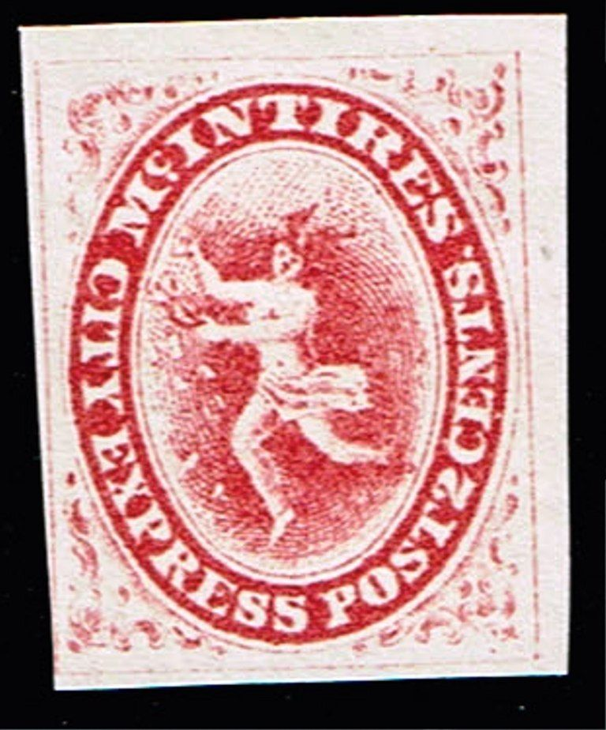
I've been told that this is a Hussey forgery with a break in the
ellipse between "CITY" and "EXPRESS". Also,
the "2" is different.
In the second forgery (made by Scott), the "C" of "CITY" is too small and different when compared to a genuine stamp. Mercury also does not have a navel in this forgery.
Scott forgeries
The two following stamps are bogus issues. There is a flag instead of Mercury in the design:
Mc. Intire's Express post bogus issues, reduced sizes. I've also
seen this bogus issue in the colors black on blue and black.
Image obtained from a Siegel auction
Probably a forgery in the color black on blue
I've been told that the above stamps are genuine 'Jays Dispatch'
stamps. However, the stamps were issued for stamp collectors
only.
(Jays Dispatch, forgery of the above bogus issue)
A letter from 8 January 1909 from J.C.Jay explaining that he used
the attached stamp (image obtained from a Siegel auction).
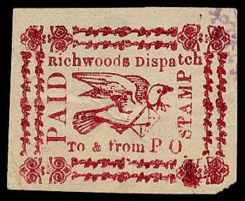
The above shown Richwoods Dispatch bogus issue, with the image of
a dove. It also appears to exist with the text "FROM THE
PO" instead of "To & from PO".
(Richwood's Dispatch Paid to the Post Office, triangle)
These bogus issues were made by 'J.C.Jay' (the creator of the bogus 'Jays Dispatch' stamps).
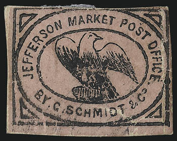
Image obtained from a Siegel auction.
Image obtained from a Siegel auction
(Genuine stamp)
This stamp was issued in two colours: black on lilac (only 4 stamps have survived) and black on blue (both issued in 1850 in New York). The inscription is "JEFFERSON MARKET POST OFFICE BY C.SCHMIDT & Co".
Some kind of reprint or forgery.
I have seen forgeries with the design differing greatly from the above one (eagle to the rigth, lined ornamental border etc). The inscription is 'Jefferson Market, P.O. By C.Schmidt & Son.'. I've seen this bogus issue in the colors red, black on yellow, black, black on blue and black on lilac. Apparently it was made by Taylor.
First bogus issue
These bogus stamps have inscription "JEFFERSON MARKET POST OFFICE BY C.SCHMIDT & Co" (as in the genuine stamps). But the design has a bear in it (similar to the Carnes issue). I've seen it in the colors brown on brown, black on green, black on yellow, black and black on orange.
{kind=link}
{kind=link}
{kind=link}
{kind=link}
{kind=link}
{kind=link}
{kind=link}
{kind=link}
{kind=link}
{kind=link}
{kind=link}